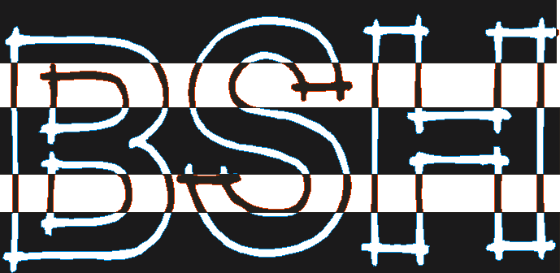

- Brazilian Security Hackers -

O servidor http://www.adara.com.tw/ possui vulnerabilidades que comprometem totalmente a sua SEGURANÇA. Esse tipo de vulnerabilidade não deveria existir de jeito nenhum em servidores de grande porte, que podem conter importantes informações.
Nossa intenção é sempre a de informar, somos a favor da segurança, temos a cura para essas vulnerabilidades, se vocês tiverem o interesse mesmo, saberam nos encontrar.
Fucks: GOVERNO BRASILEIRO.
Gr33tz:
#[bsh] e #Hacker
(rede brasil), |^ZigFred^|, Dr_delete, HardCore, Su_icidal.
______________________________________________________________________
M3mberS: SPOCED - BoMbEr-mAn - HackDark - Red_Hat
(by SPOCED)